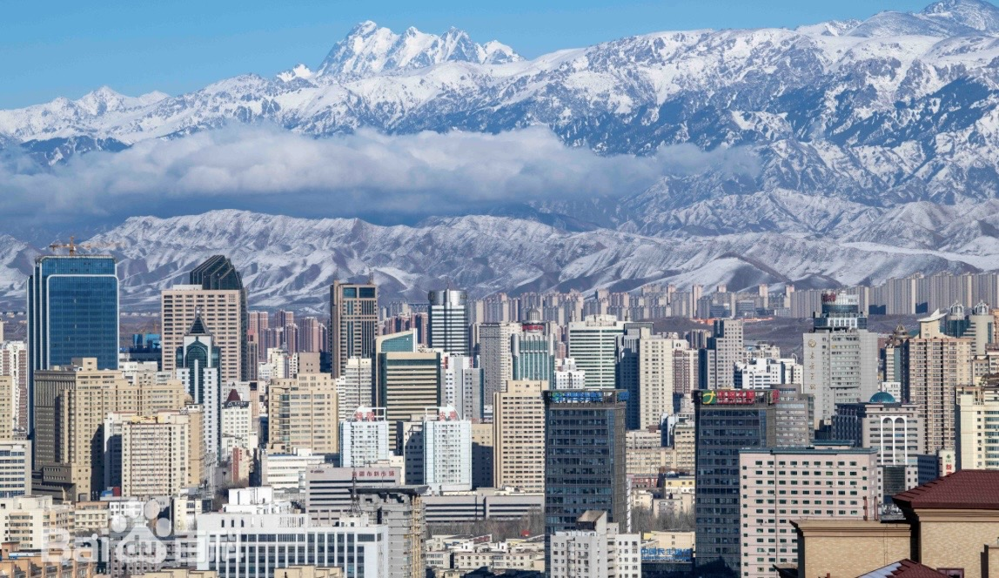

DESTINATION GUIDE

DESTINATION GUIDE
乌鲁木齐，坐落于天山北麓，是中国向西开放的重要门户城市，也是“一带一路”建设中的重要节点。这里连接亚欧大陆桥，承载着古丝绸之路的历史记忆，如今成为新疆发展的核心城市。
位于天山北麓、亚欧大陆腹地，是新疆重要交通门户，也是丝绸之路经济带的重要节点之一。
温带大陆性干旱气候
四季温差鲜明，夏季干燥炎热、昼夜温差较大，冬季寒冷漫长且常有积雪。
这里长期是连接天山南北、沟通东西的交通通道，随商旅、驿路与现代交通网络而发展。
丝绸之路的交流传统延续至今，多民族、多语言与多种生活方式共同构成城市文化。
请留意较大的昼夜温差与紫外线；跨区域出行前建议核对天气和交通信息。